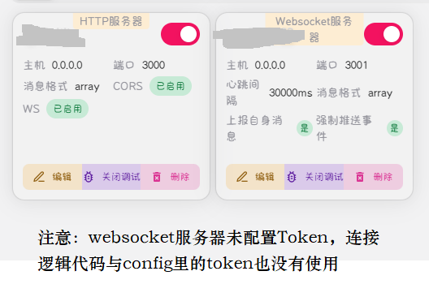
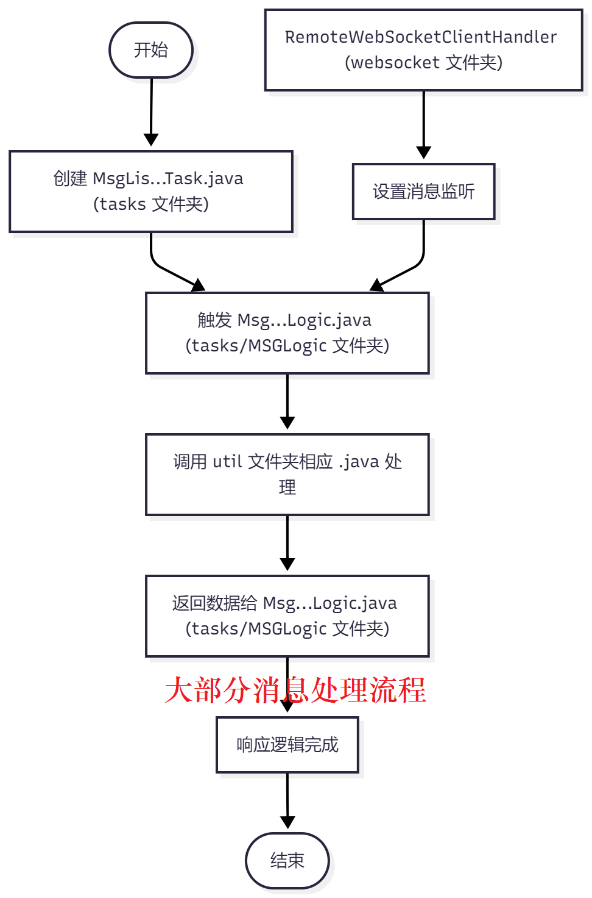
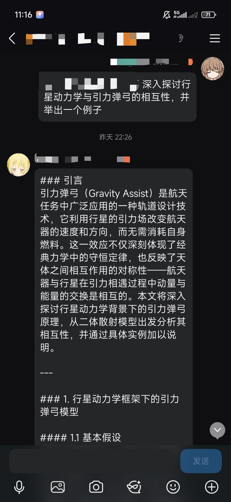
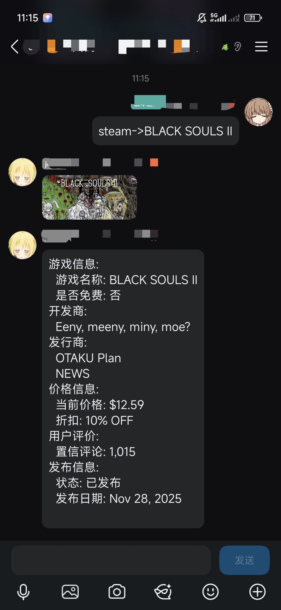
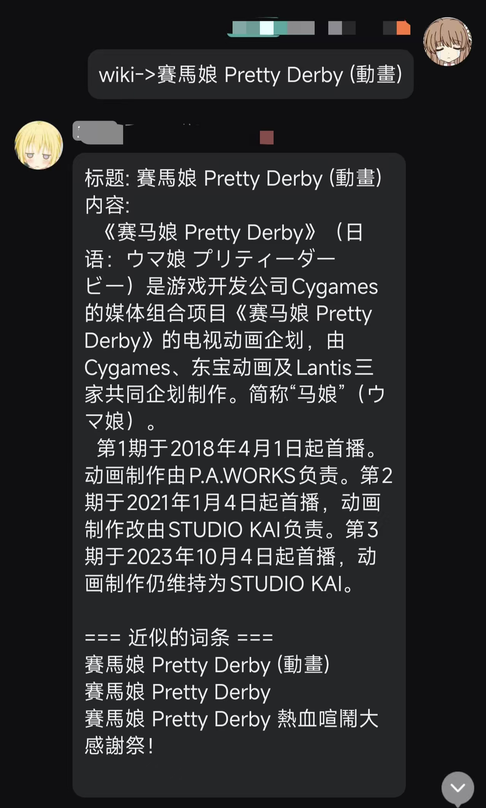
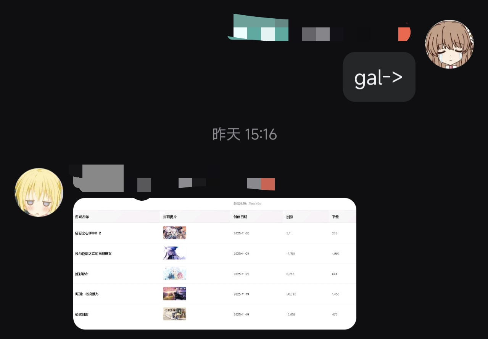
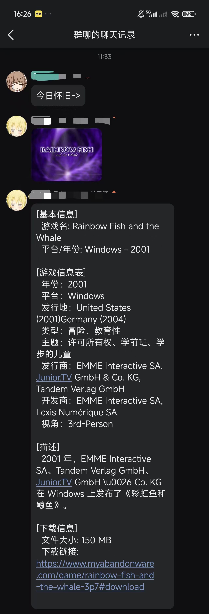
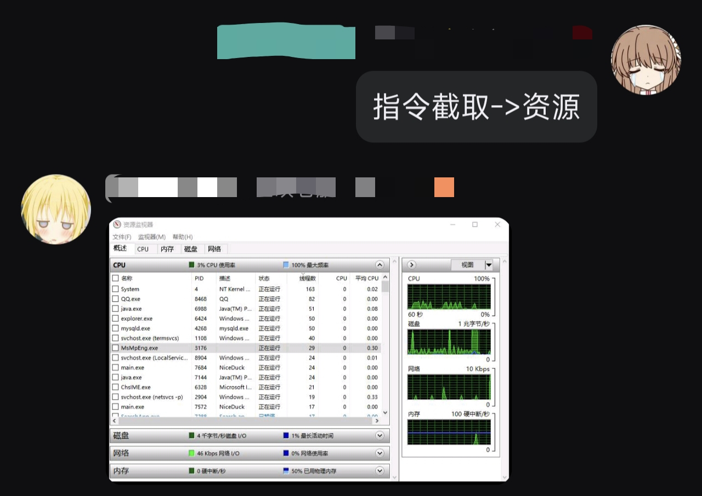
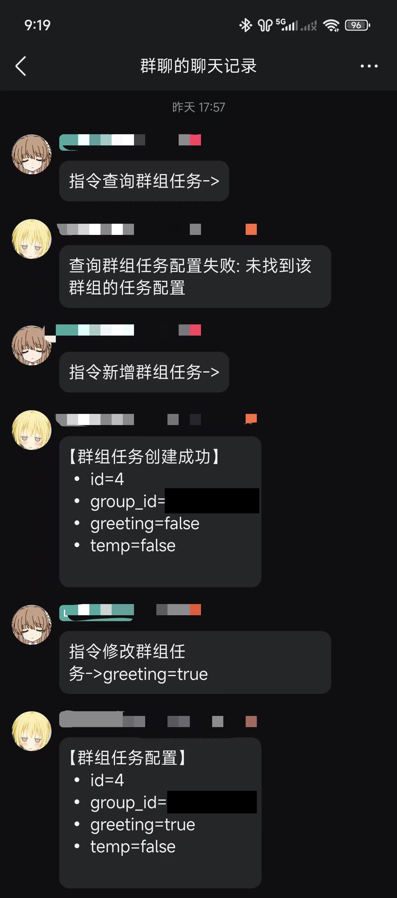
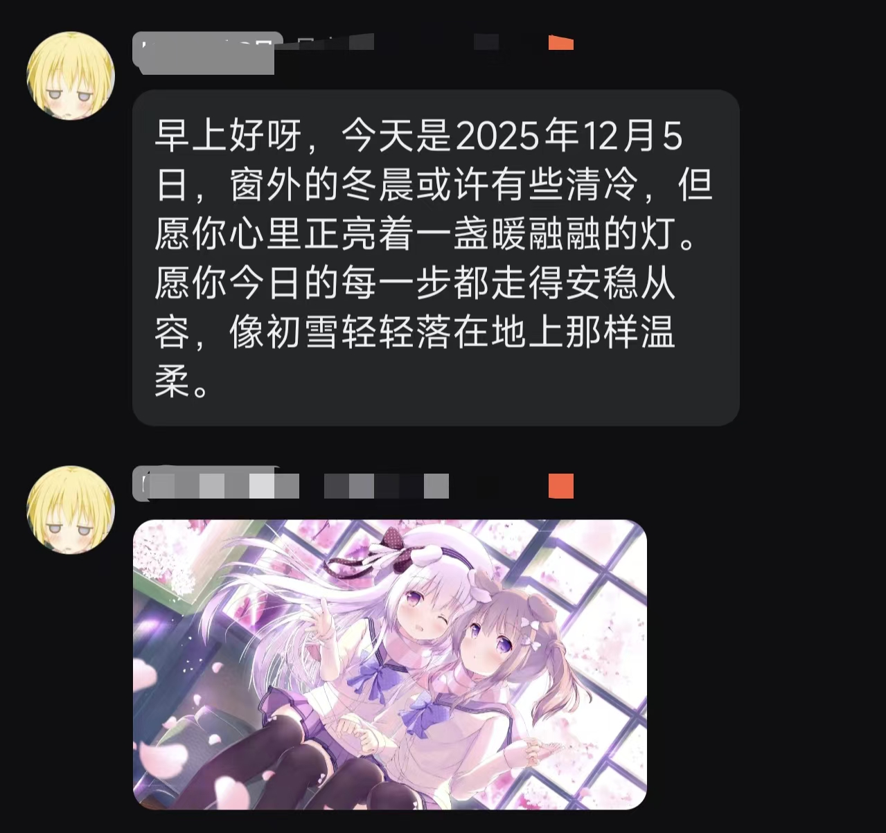

QQBot 项目文档
项目介绍
项目简介概览
Auto_Scheduled_Task 是一个基于 Spring Boot 3.1.4 的 QQ 机器人自动化任务系统。项目通过集成 NapCat API 与 OneBot 协议，实现 QQ 群聊消息的自动监听、回复和任务调度。
主要特性
环境以及三方配置
系统环境要求
| 组件 | 版本 | 说明 |
|---|---|---|
| JDK | 17+ | Java 开发环境 |
| Spring Boot | 3.1.4 | Web 框架 |
| MySQL | 5.7+ | 数据库 |
| Maven | 3.6+ | 构建工具 |
NapCat 配置
NapCat 是 QQ 机器人的核心服务，负责与 QQ 服务器通信。
需创建一个HTTP服务器与Websocket服务器，相应值在此项目config中配置
在 config.properties 中配置：
# NapCat API 基础地址
NapCatApiBase=http://0.0.0.0:3000（建议本地0000，端口自定）
# NapCat 认证令牌
NapCatAuthToken=你的NapCattoken
# 机器人 QQ ID
NapcatQQID=XXXXXXXX
#本地 Spring 应用的 WebSocket 端点
WS_URL_LOCAL=ws://localhost:XXXX/onebot
#远程 NapCat 服务器的 WebSocket 端点
WS_URL_REMOTE=ws://XXXXXXXXX:3001
#选择要连接的服务器（LOCAL 或 REMOTE）
WS_URL_SELECT=LOCAL
#WebSocket 认证令牌
WS_TOKEN=XXXX(个人没有配置，同时Websocket连接中并未使用)
注：
如果需要修改本项目端口（默认8090），若要修改除了.yml还需要修改websocket.config.WebSocketConstants的LOCAL_WS_URL值
2. 数据库配置
在 application.yml 中配置 MySQL 数据库连接：
spring:
datasource:
url: jdbc:mysql://XXXXXXXX:3306/XXXXXX
username: XXXXX
password: XXXXXXXXXX
driver-class-name: com.mysql.cj.jdbc.Driver
3. DeepSeek AI 配置
用于 @机器人 时的智能回复以及多处场景，通过环境变量配置：
# Windows 用户变量中设置 DEEPSEEK_API_KEY=你的_API_KEY 注： 调用底层文件位于util.DSchatNcatQQ。 @消息处理走方法public String Usedeepseek(String 输入文本, String userId) MsgSchTask中随机触发走方法Usedeepseek(String 输入文本) 这两个方法提示词不一样，可自行修改，用户@消息与响应记录可通过/api/onebot/conversation-history显示
5. 代理配置
在 config.properties 中配置网络代理：
# 是否启用代理(实际维基百科与steam商店还有谷歌翻译服务都是必须的) proxy.is.open=true # 代理主机地址 proxy.host=127.0.0.1 # 代理端口HTTPS proxy.port=33210 # 代理端口SOCKS proxy.port.socks=33211
项目架构
总体架构流程
核心模块结构
消息监听流转过程
数据库表结构说明
关键表结构（可能有遗漏或未更新，详见建表文件.sql）
白名单用户表
CREATE TABLE vip_id (
id INT AUTO_INCREMENT PRIMARY KEY, -- 自增主键
qq_id VARCHAR(20) NOT NULL, -- 保存 QQID，长度可根据实际需求调整
create_time TIMESTAMP DEFAULT CURRENT_TIMESTAMP -- 默认当前时间
)comment '白名单用户表';
任务状态表
create table task_open
(
param_name varchar(100) not null comment '任务名称',
state tinyint(1) not null comment '状态'
)comment '任务状态表';
古董游戏表
CREATE TABLE old_game (
id INT AUTO_INCREMENT PRIMARY KEY, -- 自增主键
content VARCHAR(2555), -- 长文本字段
image_url VARCHAR(255), -- 保存图片URL的文本字段
created_at TIMESTAMP DEFAULT CURRENT_TIMESTAMP -- 默认当前时间
)comment '老古董游戏表';
群组定时任务表
CREATE TABLE group_task(
id INT AUTO_INCREMENT PRIMARY KEY,
group_id VARCHAR(50) NOT NULL COMMENT '群号',
morning tinyint(1) NOT NULL COMMENT '早安问候'
)comment '群组定时任务表';
每日问候表
CREATE TABLE daliy_greeting(
id INT AUTO_INCREMENT PRIMARY KEY,
today VARCHAR(50) NOT NULL COMMENT '日期',
greeting tinyint(1) default 0 not null comment '问候',
evening_text VARCHAR(2555) COMMENT '晚安问候'
)comment '每日问候表';
快速开始指南
1. 环境准备
# 克隆项目 git clone https://github.com/lds7871/Auto_Scheduled_Task.git # 进入项目目录 cd Auto_Scheduled_Task # 使用 Maven 构建 mvn clean install
2. 配置文件设置
编辑 src/main/resources/config.properties：
# NapCat 配置 NapCatApiBase=http://你的NapCat地址:3000 NapCatAuthToken=你的认证令牌 NapcatQQID=你的机器人QQ号 # WebSocket配置 WS_URL_LOCAL=本地 Spring 应用的 WebSocket 端点 WS_URL_REMOTE=远程 NapCat 服务器的 WebSocket 端点 WS_URL_SELECT=#选择要连接的服务器（LOCAL 或 REMOTE） WS_TOKEN=WebSocket 认证令牌（注意我的令牌为空，无法保证有令牌时逻辑是否正确） # 数据库配置 # 修改 application.yml 中的数据库连接信息
3. 启动应用
# 运行应用 B更新依赖.cmd A编译.cmd A启动.cmd
4. 验证启动
# 检查应用状态
curl http://localhost:8090/api/onebot/status
# 响应示例：
# {
# "connected_clients": 1,
# "message": "WebSocket 服务运行正常",
# "websocket_url": "ws://localhost:7090/onebot"
# }
项目接口（详情请看APIFOX）
NCatGetController
功能: NapCat Get 接口控制器，用于调用 NapCat 服务的查询类接口
基础路由: /api/ncat/get
主要接口
| 接口 | 方法 | 功能描述 |
|---|---|---|
| /friend-list | GET | 获取 QQ 好友列表 |
| /group-list | GET | 获取加入的群组列表 |
| /group-info | GET | 获取登录用户信息 |
NCatSendMessageController
功能: NapCat 群聊消息发送控制器，用于向 QQ 群组发送消息
基础路由: /api/ncat/send
主要接口
| 接口 | 方法 | 功能描述 |
|---|---|---|
| /group-message | POST | 发送群聊文本消息 |
| /reply-message | POST | 回复群聊消息 |
| /group-image | POST | 发送群聊图片消息 |
| /group-fixed-image | POST | 发送固定URL的群聊图片（基本弃用） |
OneBotWebSocketController
功能: OneBot WebSocket 连接管理与配置控制器
基础路由: /api/onebot
主要接口
| 接口 | 方法 | 功能描述 |
|---|---|---|
| /status | GET | 获取 WebSocket 连接状态 |
| /config | GET | 获取 WebSocket 配置信息 |
| /broadcast | POST | 广播消息给所有客户端 |
| /conversation-history | GET | 获取所有用户对话历史（AI） |
| /task-status | GET | 获取所有任务的启用状态 |
| /refresh-task-config | POST | 刷新任务配置 |
| /vip-users | GET | 获取VIP用户白名单 |
| /refresh-vip-users | POST | 刷新VIP用户白名单 |
| /oldgame/trigger | POST | 手动触发 OldGameTask |
GroupTaskController
功能: 群组定时任务管理接口
基础路由: /api/group-task
主要接口
| 接口 | 方法 | 描述 | ||
|---|---|---|---|---|
| /get-by-group | POST | 根据群组 ID 查询群组任务配置，返回该群所有字段与值（为空返回 notFound）。 | ||
| /get-all | GET | 查询 group_task 表的所有记录，返回列表形式。 | ||
| /update | POST | 根据群组 ID 更新指定字段（布尔值 true → 1，false → 0）。字段名仅允许安全模式（正则: ^[a-zA-Z_][a-zA-Z0-9_]*$）。 | ||
| /create | POST | 创建新的群组任务配置行。仅需 groupId，若 groupId 已存在则返回 409 Conflict 错误。 | ||
| 备注: 创建接口若 groupId 已存在返回 code=409（HTTP Conflict），其他接口返回 code=1（notFound）或 code=-1（错误）。 | ||||
Bot 功能
MsgLisATTask
功能: @ 机器人自动智能回复
触发条件: 群聊消息中包含 [CQ:at,qq=<机器人QQ>]
工作流程
- 监听群聊消息
- 检测是否包含 @ 机器人 标记
- 消息用户是否被单防
- 提取消息内容（去除 @ 标记和前缀）
- 调用 DeepSeek AI 获取智能回复
- 通过 NapCat API 发送回复消息
使用示例
用户: @机器人 今天天气怎么样？ 机器人: [调用 DeepSeek AI 获取回复] 机器人: 根据当前时间和地点，天气预计...
配置参数
// 在数据库中控制启用状态 task_open.isMsgLisATTask
MsgLisKeyWordTask
功能: 关键词触发自动发送图片或处理分享
触发条件: 群聊消息中包含预定义的关键词
支持的关键词类型
- Arrays.asList("旮旯", "gal", "GAL", "Gal");
- Arrays.asList("魔裁", "少女", "魔法", "审判");
- 可以被二次重定向的B站连接或是小程序
工作流程
- 优先级检查（VIP 指令 > 用户指令 > 关键词 > B站分享）
- 检查用户是否被单防（被单防则忽略）
- 从数据库查询匹配的关键词
- 获取对应的媒体资源
- 发送图片消息
使用示例
1用户: 内容包含关键词 机器人: 触发调用https://github.com/lds7871/LDS_Memes_Hub内相关图片 2用户: 内容包含可重定向的B站短连接/小程序 机器人: 对短连接进行重定向提取BV号
配置参数
task_open.isMsgLisKeyWordTask
MsgLisUserCmdTask
功能: 所有用户都可用的公共指令
支持的指令
1. Steam 游戏搜索
命令格式: Steam->游戏名称 或 steam->游戏名称 示例: Steam->Portal 2 机器人响应: [游戏封面]+[Steam 游戏详细信息，包括价格、评分、描述]
2. Wikipedia 搜索
命令格式: Wiki->搜索内容 或 wiki->搜索内容 示例: Wiki->人工智能 机器人响应: [维基百科相关条目内容]+[近似词条]
3. 最近Galgame新游
命令格式: gal-> 或 GAL-> 示例: gal-> 机器人响应: [返回表格式图片，包含名称 封面 日期 浏览量 下载量 评分] 注：此功能兼容性较差且只适用于windows，部分参数需在GalgameProcessor修改
4. 今日怀旧
示例: 今日怀旧-> 机器人响应: [如有图片先返回图片]+[游戏名称信息平台简介 下载地址（如有）]
工作流程
- 监听群聊消息
- 识别指令前缀
- 提取搜索关键词
- 调用对应搜索服务（Steam API / Wikipedia API / TouchGal API）
- 格式化结果并发送
配置参数
task_open.isMsgLisUserCmdTask
MsgLisVipCmdTask
功能: VIP 白名单用户的特权指令
VIP 用户获取方式: 从数据库 vip_id 表读取
支持的 VIP 指令
1. 单防指令
命令格式: 指令单防->(用户昵称) 示例: 指令单防->(用户昵称) 功能: 对指定昵称用户启用单防 触发时机: 该用户发送消息时，机器人自动回复 "不要狗叫"
2. 撤销指令
命令格式: 指令撤销 示例: 指令撤销 功能: 取消所有单防设置
3. 截取指令
命令格式: 指令截取-> 示例: 指令截取->资源 功能: 服务主机模糊搜索“资源”窗口的运行窗口（比如资源监视器）截图（可被覆盖不可最小化）用于监控状态
4. 群组任务指令
命令格式: 指令XX群组任务-> 示例1: 指令查询群组任务-> 示例2：指令修改群组任务->temp=true(值名称=值状态) 示例3：指令新增群组任务-> 功能: 获取群组启用的定时的固定任务\修改群组启用的定时的固定任务\将群组添加到群组任务表（group_task）内
工作流程
- 检查用户是否在 VIP 白名单中
- 识别 VIP 指令类型
- 执行对应的特权操作
- 反馈执行结果
配置参数
task_open.isMsgLisVipCmdTask
MsgSchHumanTask
功能: 定时自动发送消息和图片,用于降低Bot的人机率以免被查封
执行规则
- 执行时间: 每天 9:00 - 22:00
- 触发频率: 每小时约触发2次（1/30随机概率）
- 执行内容: 随机在最近活跃群聊中发送对话或图片
工作流程
- 定时检查当前时间（每分钟一次）
- 检查是否在活动时间范围内
- 根据随机概率决定是否触发
- 获取最近活跃群聊 ID
- 随机选择：50% 发送随机对话(DeepSeek API 生成)，50% 发送随机图片（https://github.com/lds7871/LDS_Memes_Hub）
- 通过 NapCat API 发送消息
核心实现
// 每小时内随机决定是否发送（概率为当前分钟数/60/2）
if (random.nextBoolean()) {
// 50% 触发随机对话
randomChatLogic.generateAndSendRandomChat();
} else {
// 50% 触发随机图片
keywordTriggerLogic.triggerRandomImage(groupId);
}
配置参数
task_open.isMsgSchTask // 调整执行时间（Cron 表达式） @Scheduled(cron = "0 * 9-21 * * *")
MsgSchGreetingTask
功能: 定时自动发送早晚安问候消息
执行规则
- 早安问候: 每天 08:00:00 触发
- 晚安问候: 每天 23:00:00 触发
- 发送内容: 从 daliy_greeting 表获取前一天生成的问候文本
- 发送目标: group_task 表中 greeting=1 的所有群聊
工作流程
- 定时任务在指定时间（08:00:00 或 23:00:00）触发
- 检查任务是否启用（NapCatTaskIsOpen.isMsgSchTask）
- 查询 group_task 表，获取所有 greeting=1 的群组 ID
- 从 daliy_greeting 表获取最新的问候文本（morning_text 或 evening_text）
- 依次向各群组发送问候消息，间隔 1~3 秒
- 通过 NapCat API 发送消息
核心实现
// 早安问候（08:00:00 执行）
@Scheduled(cron = "0 0 8 * * ?")
public void sendMorningGreeting() {
if (!NapCatTaskIsOpen.isMsgSchTask) return;
morningGreetingLogic.executeMorningGreeting();
}
// 晚安问候（23:00:00 执行）
@Scheduled(cron = "0 0 23 * * ?")
public void sendEveningGreeting() {
if (!NapCatTaskIsOpen.isMsgSchTask) return;
eveningGreetingLogic.executeEveningGreeting();
}

获取参数
task_open.isMsgSchTask // 数据库字段映射 group_task.greeting = 1 // 启用问候的群组 daliy_greeting.morning_text // 早安文本 daliy_greeting.evening_text // 晚安文本
配置参数
task_open.isDailyGreetingCreateTask task_open.isDailyGreetingMorningTask task_open.isDailyGreetingEveningTask
🔧 故障排查
常见问题
Q1: WebSocket 连接失败
错误信息: WebSocket 连接被拒绝
解决方案:
- 确认 NapCat 服务正常运行
- 检查防火墙配置，允许 3000 端口
- 验证 config.properties 中的 API 地址正确
Q2: 消息发送失败
错误信息: API 请求失败，状态码 401/403
解决方案:
- 检查 NapCatAuthToken 是否正确
- 确认机器人 QQ 已加入群聊
- 检查 NapCat 权限设置
Q3: AI 回复不工作
错误信息: DeepSeek API 调用失败
解决方案:
- 检查系统环境变量中 DEEPSEEK_API_KEY 设置
- 确认 API Key 有效期未过期
- 检查网络连接和代理设置
📞 支持和反馈
- 问题反馈: 请提交 GitHub Issues
- 功能建议: 欢迎新建分支提交 Pull Requests
最后更新: 2025年12月
项目版本: 0.9